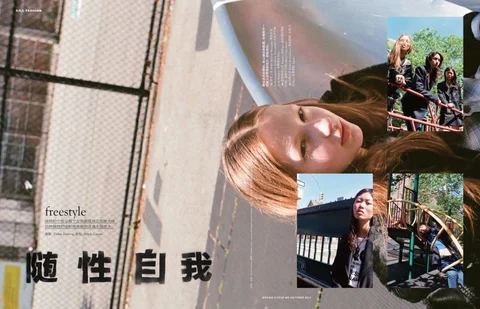
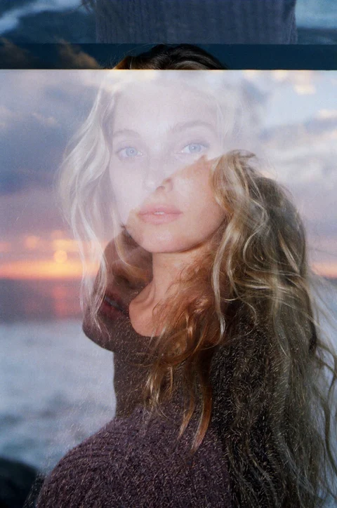
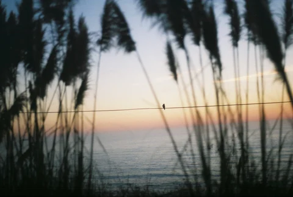
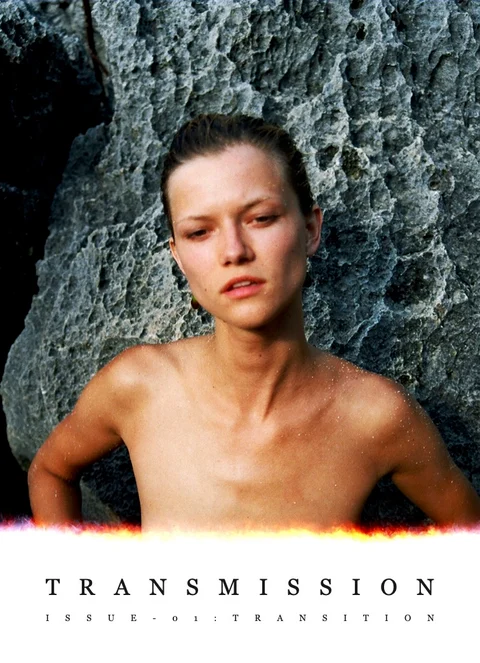
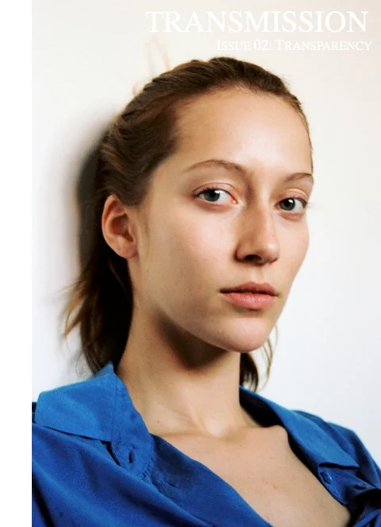
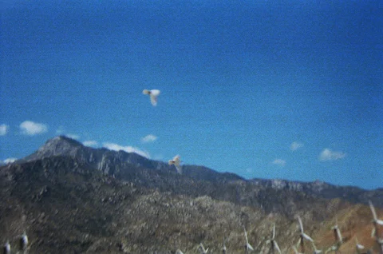

Vogue Me China
Freestyle · Light Up · As You Are

View editorials
“Personal, intimate, and refreshingly direct.”

Freestyle · Light Up · As You Are

View editorialsNozomi Iijima & Irene Kim

 View photographs
View photographs
“One of the most exciting publications of the moment.”
Founded in 2012.
Over ten issues and 50,000 copies.



“A cornucopia of color.”